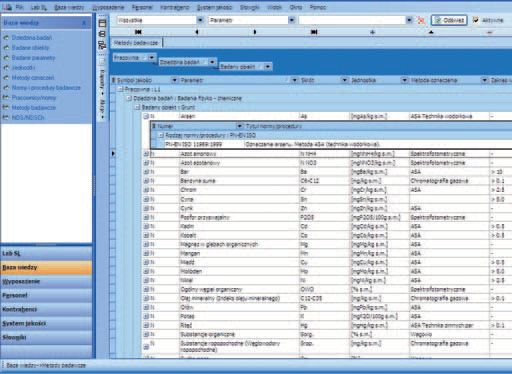
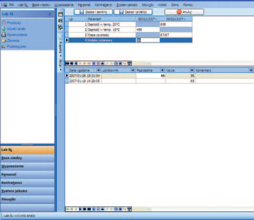

Artykuł stanowi wprowadzenie do tematu komputeryzacji laboratorium i zarządzania zachodzącymi w nim procesami za pomocą informatycznych systemów wspomagających pracę w laboratorium. Celem artykułu jest zaprezentowanie przykładowych możliwości systemu w oparciu o zadania, jakie powinien realizować system LIMS (ang. Laboratory Information Management System). W artykule przedstawione zostały korzyści płynące z wdrożenia takiego systemu oraz cechy, którymi charakteryzuje się dobry system LIMS.
Kiedy należy rozważać wdrożenie takiego systemu? Czego można się po nim spodziewać? Na co zwracać uwagę przy wyborze systemu LIMS? W poniższym tekście postaram się odpowiedzieć na te pytania i przybliżyć problem informatyzacji laboratorium przez wdrożenie spójnego systemu zarządzania. Mam nadzieję, że poniższe rozważania, a także ich kontynuacja, dotycząca wyboru właściwego rozwiązania, okażą się cenne przy podejmowaniu decyzji o zakupie lub modernizacji systemu LIMS.  Coraz trudniej wyobrazić sobie laboratorium, którego praca oraz podejmowane w nim decyzje nie są wspomagane przez komputery i mniej lub bardziej złożone systemy informatyczne. Z oczywistych względów dedykowane rozwiązania informatyczne trafiają najpierw do laboratoriów dużych, i to zarówno pod względem liczby zatrudnionego personelu, jak i liczby wykonywanych oznaczeń, a dopiero w dalszej kolejności są wdrażane w mniejszych laboratoriach. Sytuację, z którą mamy obecnie do czynienia w tej dziedzinie, można porównać do ogólnego procesu informatyzacji biur i przedsiębiorstw, jaki miał miejsce kilka czy kilkanaście lat temu. Poprzez analogię można więc domniemywać, że tak jak dzisiaj trudno jest znaleźć przedsiębiorstwo bez komputerów i biurowych systemów wspomagających jego prace, tak za kilka lat trudno będzie wyobrazić sobie laboratorium bez systemu informatycznego typu LIMS. Już dzisiaj funkcjonowanie średniej wielkości laboratorium, w którym procesy związane z prowadzoną przez nie działalnością nie są organizowane, nadzorowane i archiwizowane przez system informatyczny, jest rzadkie i postrzegane jako nieroztropne. Wdrożenie systemu LIMS nabiera szczególnej wagi w laboratoriach posiadających wdrożony system jakości lub akredytowanych, które w konsekwencji przyjęcia zasad postępowania, opisanych np. w normie PN/EN ISO/IEC 17025:2005, w serii norm ISO 9000 oraz w zasadach Good (Automated) Laboratory Practices, są zobowiązane nie tylko do przestrzegania pewnych reguł postępowania, ale także do właściwej dokumentacji swojej działalności. Jednym z celów, jakie stawia się przed systemami typu LIMS, jest ułatwienie wdrożenia lub pomoc w utrzymaniu i doskonaleniu systemu zapewnienia jakości.
Do najistotniejszych zadań realizowanych w laboratorium przy pomocy
systemu LIMS należy zaliczyć:
– ewidencję i nadzór nad zleceniami i próbkami;
– planowanie pracy laboratorium i nadzór nad przebiegiem analiz;
– protokołowanie wyników analiz niezależnie od tego, czy są one
pozyskiwane w sposób umożliwiający jedynie ich ręczne wpisanie
do systemu, czy też są do niego importowane automatycznie – bezpośrednio
z aparatury pomiarowej;
– automatyczne rejestrowanie operacji wykonywanych na danych,
takich jak: walidacja, obliczenia, zmiany i korekty, zatwierdzanie;
– analizy statystyczne związane nie tylko z wynikami pomiarów, ale
także z działalnością całego laboratorium;
– tworzenie sprawozdań (raportów) i protokołów w formie elektronicznej
lub w formie wydruków. Tworzone przez system dokumenty
powinny mieć przejrzystą i estetyczną formę, zgodną z obowiązującą
księgą jakości i załącznikami do niej z jednej strony oraz
oczekiwaniami i wymaganiami klientów laboratorium – z drugiej.
W laboratoriach prowadzących działalność komercyjną powszechne
jest przekazywanie wyników badań i analiz w formie drukowanego
raportu, zgodnego ze wzorem zamieszczonym w dokumentach systemu
jakości. Natomiast w przypadku laboratoriów technologicznych,
gdzie ogromne znaczenie ma czas pozyskania informacji, wyniki
badań są często udostępniane także w inny sposób, na przykład na
ekranach komputerów w dziale sterowania produkcją;
– zarządzanie procedurami i ich udostępnianiem w aktualnej wersji;
– planowanie, ewidencjonowanie i protokołowanie wzorcowań, sprawdzeń,
konserwacji i napraw aparatury;
– zarządzanie wyposażeniem, materiałami i odczynnikami.
Wdrożenie systemu LIMS i jego wykorzystywanie ma sens tylko wtedy,
kiedy będzie niosło za sobą wymierne korzyści dla laboratorium.
Analizę korzyści wdrożenia takiego systemu każde z laboratoriów
musi przeprowadzić samodzielnie. Tak jak różna jest specyfika poszczególnych
jednostek, różne ich potrzeby i wymagania, tak różne
będą oczekiwania stawiane przed wdrożeniem systemu LIMS. Do
wymienianych najczęściej należą:
– wspomniane już łatwiejsze wdrożenie oraz utrzymanie systemu
zapewnienia jakości;
– automatyczna dokumentacja pracy laboratorium, zgodna z wymaganiami
wdrożonego lub wdrażanego systemu zapewnienia jakości;
– poprawa jakości pomiarów i eliminacja wielu źródeł błędów (np.
wielokrotnego przepisywania wyników analiz);
– szybki dostęp do danych archiwalnych;
– usprawnienie zarządzania zasobami ludzkimi, sprzętowymi i materiałowymi;
– monitorowanie postępu realizacji zleceń;
– poprawa wewnętrznej i zewnętrznej komunikacji;
– zwiększenie wydajności przy równoczesnym zmniejszeniu kosztów
działalności;
– nowoczesny wizerunek firmy.

Powyższe oczekiwania mają charakter ogólny i nie zależą od rodzaju
laboratorium. Dla laboratoriów technologicznych, związanych bezpośrednio
z nadzorem nad procesem produkcji, listę oczekiwań można
przykładowo poszerzyć o:
– sprawniejsze kontrolowanie jakości produkcji na każdym z jej etapów
(przygotowanie surowców, kolejne etapy procesu produkcyjnego,
badanie jakości produktu końcowego);
– wykonywanie analiz statystycznych oraz kontrola parametrów jakościowych
na podstawie zgromadzonych w bazie danych i wzorców,
a następnie optymalizacji procesu produkcji opartej na wynikach
tych analiz i kontroli.
Udostępnianie wyników analiz w laboratoriach technologicznych
obarczone jest często surowym reżimem czasowym, a systemy LIMS
wzbogaca się w stanowiska do prezentacji danych lub systemy powiadamiania,
które bezzwłocznie przekazują niezbędne informacje
z laboratorium do działu produkcji.
Dla laboratoriów akredytowanych lub starających się o akredytację
istotne jest ponadto:
– spełnienie wymagań punktu 4.1.5.c normy PN-EN ISO/IEC
17025:2005 („laboratorium powinno mieć politykę i procedury
zapewniające klientom ochronę poufnych informacji i praw własności,
w tym procedury zabezpieczenia elektronicznego gromadzenia
i przekazywania wyników”);
– spełnienie wymagań punktu 4.3.1 normy PN-EN ISO/IEC
17025:2005 („laboratorium powinno ustanowić i utrzymywać
procedury nadzoru nad wszystkimi dokumentami, które stanowią
składniki jego systemu zarządzania”, zarówno tworzonych w laboratorium,
jak i pochodzących z zewnątrz”).
Autor ukończył studia inżynierskie na wydziale Fizyki i Techniki Jądrowej AGH w Krakowie; w ramach studiów podyplomowych uzyskał tytuł Master of Business Administration na University of Central Lancashire, jest także audytorem systemów jakości ISO PN/EN 17025:2005. Od kilkunastu lat związany z problematyką aparatury kontrolno-pomiarowej dla laboratoriów, systemami oceny zanieczyszczenia powietrza; obecnie pełni funkcję dyrektora handlowego w CSMS Consulting & Software, prowadząc projekty związane z systemami typu LIMS.